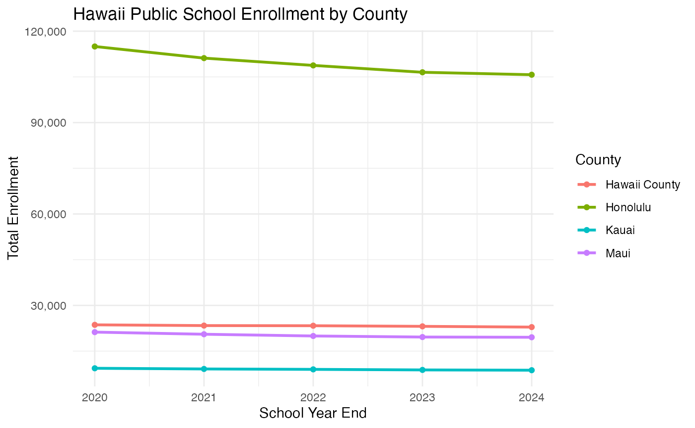
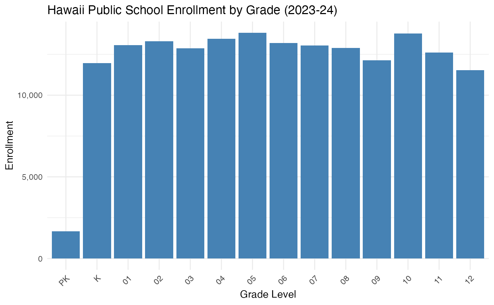

Overview
The hischooldata package provides a simple interface for
accessing Hawaii public school enrollment data from the Hawaii
Department of Education (HIDOE) and the Hawaii State Department of
Business, Economic Development & Tourism (DBEDT) State Data
Book.
Hawaii’s Unique School Structure
Unlike all other U.S. states, Hawaii has a single statewide school district. The Hawaii Department of Education operates all public schools across the entire state, organized into four counties:
- Honolulu (Oahu) - approximately 62% of total enrollment
- Hawaii County (Big Island) - approximately 13% of enrollment
- Maui (includes Molokai and Lanai) - approximately 11% of enrollment
- Kauai - approximately 5% of enrollment
- Charter Schools - approximately 8% of enrollment (statewide)
This single-district structure means the data is naturally organized at the county level rather than the school district level found in other states.
Installation
# Install from GitHub
# install.packages("devtools")
devtools::install_github("almartin82/hischooldata")Basic Usage
Fetching Enrollment Data
The main function is fetch_enr(), which downloads
enrollment data for a specific school year:
library(hischooldata)
# Get 2024 enrollment data (2023-24 school year)
enr_2024 <- fetch_enr(2024, use_cache = TRUE)
head(enr_2024)
#> end_year district_id district_name county_name type
#> 1 2024 HI Hawaii Department of Education State Total STATE
#> 2 2024 HI Hawaii Department of Education State Total STATE
#> 3 2024 HI Hawaii Department of Education State Total STATE
#> 4 2024 HI Hawaii Department of Education State Total STATE
#> 5 2024 HI Hawaii Department of Education State Total STATE
#> 6 2024 HI Hawaii Department of Education State Total STATE
#> grade_level subgroup n_students pct aggregation_flag is_state
#> 1 TOTAL total_enrollment 169308 NA state TRUE
#> 2 PK total_enrollment 1659 NA state TRUE
#> 3 K total_enrollment 11963 NA state TRUE
#> 4 01 total_enrollment 13060 NA state TRUE
#> 5 02 total_enrollment 13300 NA state TRUE
#> 6 03 total_enrollment 12869 NA state TRUE
#> is_county is_charter
#> 1 FALSE FALSE
#> 2 FALSE FALSE
#> 3 FALSE FALSE
#> 4 FALSE FALSE
#> 5 FALSE FALSE
#> 6 FALSE FALSEUnderstanding the end_year Parameter
The end_year parameter represents the
END of the school year:
-
end_year = 2024means the 2023-24 school year (ending June 2024) -
end_year = 2025means the 2024-25 school year (ending June 2025)
This convention is consistent with other state schooldata packages.
Available Years
Use get_available_years() to see what years are
available:
get_available_years()
#> $min_year
#> [1] 2011
#>
#> $max_year
#> [1] 2025
#>
#> $years
#> [1] 2011 2013 2014 2015 2016 2017 2018 2019 2020 2021 2022 2023 2024 2025
#>
#> $description
#> [1] "Hawaii enrollment data is available for school years ending 2011 to 2025 (except 2012 - no 2011 Data Book published)"Note: School year 2011-12 (end_year = 2012) is not available because the 2011 DBEDT State Data Book was not published.
Data Structure
The returned data frame includes:
| Column | Description |
|---|---|
end_year |
School year end (e.g., 2024 for 2023-24) |
type |
Aggregation level: STATE, COUNTY, or CHARTER |
county_name |
Geographic area name |
grade_level |
Grade level (PK, K, 01-12, SPED, or TOTAL) |
n_students |
Number of students enrolled |
is_state |
Boolean flag for state-level data |
is_county |
Boolean flag for county-level data |
is_charter |
Boolean flag for charter school data |
Example: County-Level Analysis
library(dplyr)
library(ggplot2)
# Get recent years
enr_multi <- fetch_enr_multi(2020:2024, use_cache = TRUE)
# Calculate county totals over time
county_trends <- enr_multi |>
filter(type == "COUNTY", grade_level == "TOTAL") |>
select(end_year, county_name, n_students)
# Plot trends
ggplot(county_trends, aes(x = end_year, y = n_students, color = county_name)) +
geom_line(linewidth = 1) +
geom_point() +
labs(
title = "Hawaii Public School Enrollment by County",
x = "School Year End",
y = "Total Enrollment",
color = "County"
) +
scale_y_continuous(labels = scales::comma) +
theme_minimal()
Example: Grade-Level Analysis
# Get state-level enrollment by grade
enr_2024 <- fetch_enr(2024, use_cache = TRUE)
state_grades <- enr_2024 |>
filter(type == "STATE", !grade_level %in% c("TOTAL", "SPED")) |>
mutate(grade_level = factor(grade_level, levels = c("PK", "K", sprintf("%02d", 1:12))))
# Plot grade distribution
ggplot(state_grades, aes(x = grade_level, y = n_students)) +
geom_col(fill = "steelblue") +
labs(
title = "Hawaii Public School Enrollment by Grade (2023-24)",
x = "Grade Level",
y = "Enrollment"
) +
scale_y_continuous(labels = scales::comma) +
theme_minimal() +
theme(axis.text.x = element_text(angle = 45, hjust = 1))
Caching
The package caches downloaded data locally to avoid repeated downloads:
# Check cache status
cache_status()
#> year type size_mb age_days
#> 1 2020 enrollment 0 0
#> 2 2021 enrollment 0 0
#> 3 2022 enrollment 0 0
#> 4 2023 enrollment 0 0
#> 5 2024 enrollment 0 0
# Clear cache for a specific year
clear_cache(2024)
# Clear all cached data
clear_cache()Data Sources
The package fetches data from:
-
DBEDT State Data Book (primary source): Tables 3.12
and 3.13
- URL: https://files.hawaii.gov/dbedt/economic/databook/
- Contains county-level enrollment by grade
-
HIDOE Official Enrollment (fallback for recent
years):
- URL: https://www.hawaiipublicschools.org/
- Contains school-level detail (when available)
Known Data Limitations
No 2011-12 Data: The 2011 DBEDT Data Book was not published, so end_year = 2012 is not available.
SPED Data: Special Education enrollment is shown separately in most years but is suppressed in the 2024-25 data (per the 2024 Data Book footnote).
Multi-Year Tables: The 2021 Data Book contains both 2020-21 and 2021-22 school year data. The package handles extraction of the correct year.
COVID Impact: Both the 2019 and 2020 Data Books contain 2019-20 school year data (the 2020 Data Book is a duplicate due to COVID disruptions).
Python Interface
A Python package is also available for accessing the same data:
# pip install hischooldata
from hischooldata import fetch_enr
df = fetch_enr(2024, use_cache=True)
print(df.head())See the pyhischooldata/ directory for the Python
implementation.
Session Info
sessionInfo()
#> R version 4.5.0 (2025-04-11)
#> Platform: aarch64-apple-darwin22.6.0
#> Running under: macOS 26.1
#>
#> Matrix products: default
#> BLAS: /opt/homebrew/Cellar/openblas/0.3.30/lib/libopenblasp-r0.3.30.dylib
#> LAPACK: /opt/homebrew/Cellar/r/4.5.0/lib/R/lib/libRlapack.dylib; LAPACK version 3.12.1
#>
#> locale:
#> [1] en_US.UTF-8/en_US.UTF-8/en_US.UTF-8/C/en_US.UTF-8/en_US.UTF-8
#>
#> time zone: America/New_York
#> tzcode source: internal
#>
#> attached base packages:
#> [1] stats graphics grDevices utils datasets methods base
#>
#> other attached packages:
#> [1] ggplot2_4.0.1 dplyr_1.1.4 hischooldata_0.1.0
#>
#> loaded via a namespace (and not attached):
#> [1] gtable_0.3.6 jsonlite_2.0.0 compiler_4.5.0 tidyselect_1.2.1
#> [5] jquerylib_0.1.4 scales_1.4.0 systemfonts_1.3.1 textshaping_1.0.4
#> [9] yaml_2.3.12 fastmap_1.2.0 readxl_1.4.5 R6_2.6.1
#> [13] labeling_0.4.3 generics_0.1.4 curl_7.0.0 knitr_1.51
#> [17] htmlwidgets_1.6.4 tibble_3.3.1 desc_1.4.3 RColorBrewer_1.1-3
#> [21] bslib_0.9.0 pillar_1.11.1 rlang_1.1.7 cachem_1.1.0
#> [25] xfun_0.55 S7_0.2.1 fs_1.6.6 sass_0.4.10
#> [29] otel_0.2.0 cli_3.6.5 pkgdown_2.2.0 withr_3.0.2
#> [33] magrittr_2.0.4 digest_0.6.39 grid_4.5.0 rappdirs_0.3.4
#> [37] lifecycle_1.0.5 vctrs_0.7.0 evaluate_1.0.5 glue_1.8.0
#> [41] farver_2.1.2 cellranger_1.1.0 codetools_0.2-20 ragg_1.5.0
#> [45] purrr_1.2.1 rmarkdown_2.30 httr_1.4.7 tools_4.5.0
#> [49] pkgconfig_2.0.3 htmltools_0.5.9